Wibber
Om ni inte är Tibber kund så rekomenderar jag istället: powersave
|
Få koll på elpriser och din egen förbrukning. Wibber är utvecklad för Apple Watch och hämtar sin data ifrån Tibber. Man måste ha ett konto på Tibber med tillhörande Access Token för att kunna använda appen.
1. Bli kund/Skapa konto hos Tibber. link 2. Skapa Access Token till ditt Tibber konto. link 3. Installera Wibber. link 4. Smeknamn på din bostad måste vara skapat. Det gör du i Tibber Appen under Mitt konto -> Mina Hem -> Smeknamn. |
5. Slå in AccessToken som du skapade i steg 2. Notera att stort i och 1 samt stort o och Noll kan vara väldigt lika varandra i vissa fonter.
Det enklaste sättet är att skapa en textersättningsfras i iPhonen, där skapar man ett kortkommande för sitt Token. Det kan göras i iPhonen under Inställningar->Allmänt->Tangentbord->Textersättning (settings->general->keyboard->Text Replacement). Sen när man promptas i klockan för token så använder man sin ersättningsfras i iPhonen istället. På min telefon har jag skapat ersättningfrasen atjhez, se: 
|
|
6. Om du slog in ett giltigt Access Token så kan du nu välja med att gå vidare med den just skapade Usern, genom att klicka på den, alternativt kan man skapa ännu en User och lägga till ytterligare en AccessToken. 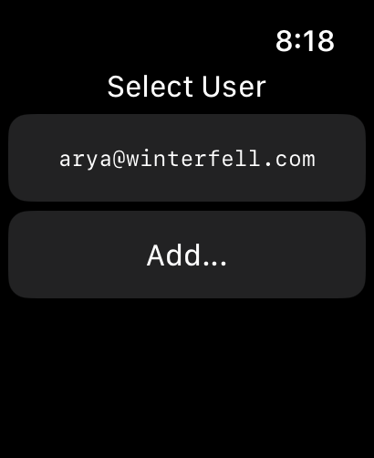 |
|
7. Om du nu har klickat på den Usern som du skapade så skapas 3 nya Tabbar. Första Tabben innehåller: 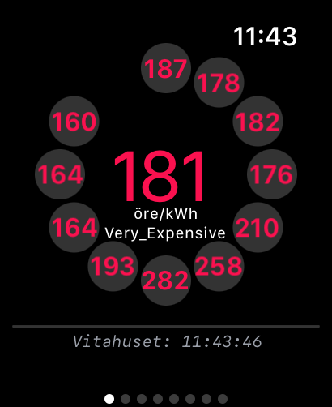 Denna vy visar nuvarande spotpris (inkl tillägg, skatt och moms). Färgen är grön om nivån på priset är "VERY_CHEAP" eller "CHEAP", Blå om priset är "NORMAL" och röd om Priset är "EXPENSIVE" eller "VERY_EXPENSIVE". Definitionerna av nivåerna kan ses här link. Under linjen visas namnet på huset/lgh som du angivit i hos Tibber och tiden när datan sist blev refreshad. |
|
8. Andra Tabben innehåller: 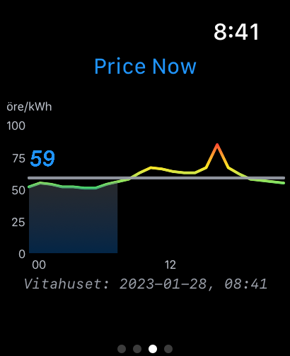  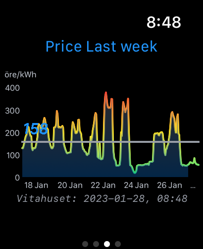 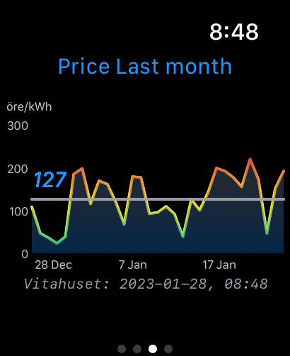 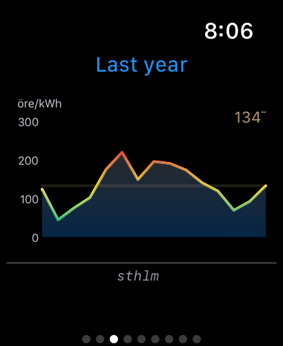 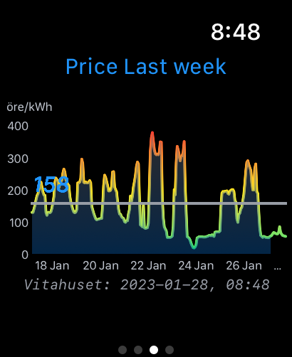 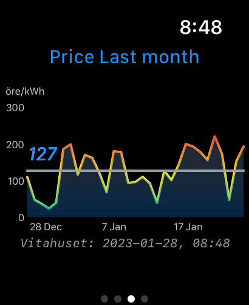 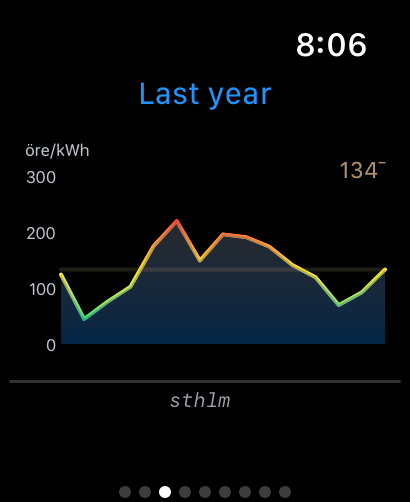Denna chart visar priset på elen på y axeln och tid på x axeln. Medelpriset anges med blå text och en horisontell linje. Skuggning under grafen går fram till nuvarande tid. Om man svajpar sakta över grafen så visas priset istället för titeln. Om man klickar på grafen så visas grafen för vecka/månad/år istället. |
|
9. Sista Tabben visar data angående ditt konto.
|
|
10. Ny funktionalitet from version 1.55 och om man blir prenumerant så kommer även Complications, "Plugin Planning", Förbrukning och Kostnad per timme/dag/månad.
Complications 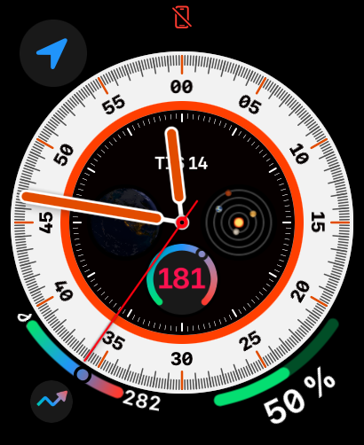  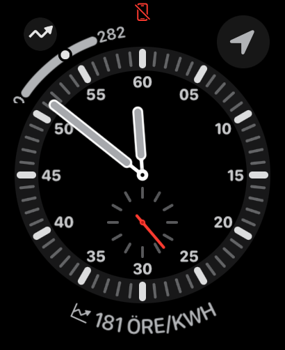
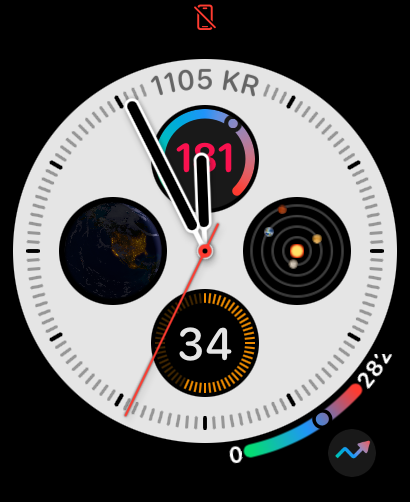
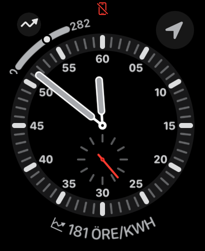
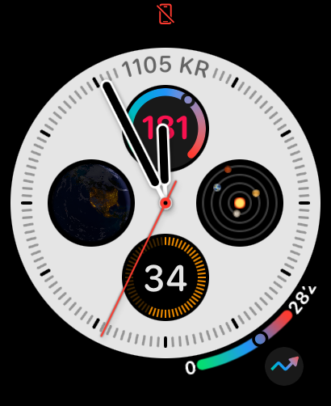Första bilden nedre vänstra hörnet, corner widget, max pris tom midnatt är 282 och gauge pekar mot nuvarande pris. Andra bilden längst ner, rectangular widget, Visar nuvarande pris i rött, kostnad för nuvarande månad exklusive idag och även graf över elprisets utveckling. Tredje bilden längst ner, inline widget, visar nuvarande pris Fjärde bilden ovan mitten, circular widget med text, visar nuvarande pris med gauge med förhållande till framtida maxpris och även kostnad för nuvarande månad exklusive idag. Plugin planning  Använd snurrknappen för att stega antal timmar du behöver vara inkopplad (i detta exempel 5), sen visar appen vilken tid max ska plugga in för att minimera medlekostnaden. Elkostnader 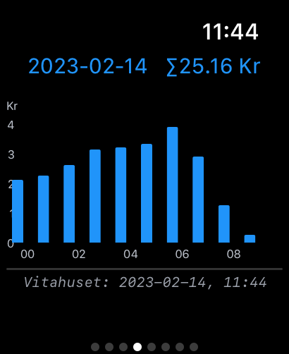 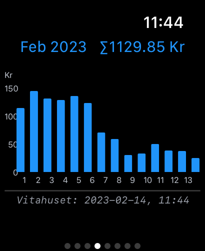 Visar kostnaden för idag, denna vecka, månad och ett år tillbaka. Klicka på bilden för att switcha. Försbrukning 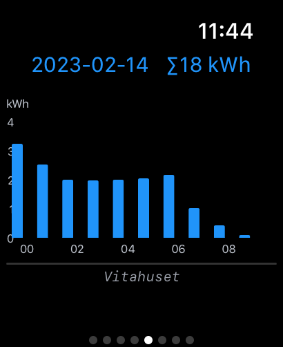 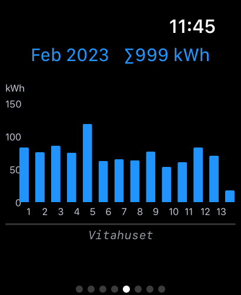 Visar förbrukningen för idag, denna vecka, månad och ett år tillbaka. Klicka på bilden för att switcha. |
Appen är också översatt till Svenska.
Mail for support